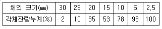
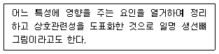
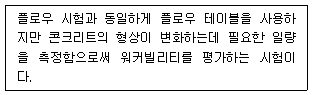
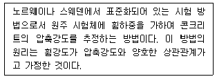
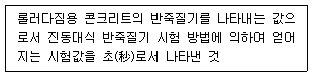
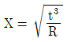
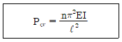
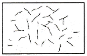
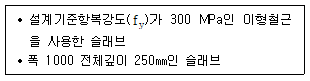

콘크리트기사 (2021-03-07 기출문제)
1과목: 재료 및 배합
1. 각종 시멘트의 용도에 관한 설명으로 옳지 않은 것은?
- 고로 슬래그 시멘트는 노출 콘크리트로 적합하다.
- 보통 포틀랜드 시멘트는 일반적 인 용도로 사용된다.
- 저 열 포틀랜드 시멘트는 매스 콘크리트로 적합하다.
- 조강 포틀랜드 시멘트는 긴급 공사용 콘크리트로 유리하다.
(정답률: 71%)

2. 콘크리트 배합 설계에서 물 - 결합재비 에 대한 설명으로 틀린 것은?
- 물 - 결합재비는 소요의 강도, 내구성, 수밀성 및 균열저항성 등을 고려하여 정하여야한다.
- 콘크리트의 압축강도를 기 준으로 물 - 결합재비를 정 하는 경 우, 공시체는 재령 28일을 표준으로 한다.
- 콘크리트의 압축강도를 기 준으로 물 - 결합재비를 정하는 경우, 압축강도와 물 - 결합재 비와의 관계는 시험에 의하여 정하는 것을 원칙으로 한다.
- 콘크리트의 압축강도를 기준으로 물 - 결합재비를 정하는 경우, 배합에 사용할 물 - 결 합재비는 기준재령의 결합재 - 물비와 압축강도와의 관계식에서 배합강도에 해당하는 결합재 - 물비 값으로 한다.
(정답률: 53%)
3. 단위 시멘트량이 320kg/m3, 물 - 시멘트비가 45%, 잔골재율이 38%인 배합조건에서 콘크리트의 잔골재량(㉠)과 굵은 골재량(㉡)을 구하면? (단, 공기량: 4.5%, 시멘트의 밀도: 3.15g/cm3, 잔골재의 밀도: 2.56g/cm3, 굵은 골재의 밀도: 2.60g/cm3)
- ㉠: 670.512 kg/m3, ㉡: 1027.424 kg/m3
- ㉠: 689.715 kg/m3, ㉡: 1142.908 kg/m3
- ㉠: 7⑤.425 kg/m3, ㉡: 1178.112 kg/m3
- ㉠: 714.223 kg/m3, ㉡: 1194.532 kg/m3
(정답률: 51%)
4. 어떤 배합설계에서 결합재로 시멘트와 고로 슬래그 미분말이 사용되 었다. 결합재 전체 질량이 550 kg/m3이라고 할 때, 제빙 화학제에 대한 내구성 확보를 위해 필요한 고로 슬래그 미분말의 최 대 혼입량은? (단, 지속적으로 수분과 접촉하고 동결융해의 반복작용에 노출되는 콘크리트)
- 68. 7 kg/m3
- 137.5 kg/m3
- 192.5 kgm3
- 275.0 kg/m3
(정답률: 43%)
5. 고로 슬래그 미분말을 사용한 콘크리트에 대한 설명으로 옳지 않은 것은?
- 고로 슬래그 미분말을 사용한 콘크리트는 수밀성이 향상된다.
- 고로 슬래그 미분말을 사용한 콘크리트는 철근 보호성능이 향상된다.
- 고로 슬래그 미분말을 사용한 콘크리트는 탄산화 속도를 저하시키는 효과가 있다.
- 고로 슬래그 미분말을 사용한 콘크리트의 초기 강도는 포틀랜드시멘트 콘크리트보다 작다.
(정답률: 41%)
6. 시멘트 비중 시험을 실시한 결과 르샤틀리에 비중병에 광유를 주입 하고 측정 한 눈금이 0.5 mL였다. 이 비중병에 시멘트 64 g을 넣고 광유가 올라온 눈금을 측정한 결과 21.0 mL가 되었다면 이 시멘트의 비중은?
- 3. 06
- 3.12
- 3. 18
- 3.24
(정답률: 58%)
7. 황산나트륨 포화용액을 사용한 골재의 안정성 시험에서 반복 시험을 실시할 경우 황산나트륨 포화용액의 골재에 대한 잔류 유무를 조사하여야하는데 이 때 사용하는 용액에 대한 설명으로 옳은 것은?
- 염화바륨을 사용하며, 용액의 농도는 5∼ 10%로 한다.
- 수산화나트륨을 사용하며, 용액의 농도는 3%로 한다.
- 탄닌산 용액을 사용하며, 용액의 농도는 2 ∼ 3%로 한다.
- 페놀프탈레인 용액을 사용하며, 용액의 농도는 1%로 한다.
(정답률: 39%)
8. 굵은 골재의 체가름 시험 결과가 아래의 표와 같을 때, 굵은 골재 최대치 (Gmax) 와 조립률 (F.M)을 구한 것으로 옳은 것은?

- 20mm, 7.11
- 20mm, 7.76
- 25mm, 7.11
- 25mm, 7.76
(정답률: 55%)
9. 현장에서 콘크리트 압축강도를 22회 측정 한 결과 표준편차는 5MPa이었다. 설계기준압축강도(fck)가 35 MPa일 때 배합강도(fcr)는? (단, 시험횟수 20회, 25회 일 경우 표준편차의 보정 계수는 각각 1.08, 1.03이다.)
- 38.5 MPa
- 42.1 MPa
- 43.9 MPa
- 45.2 MPa
(정답률: 40%)
10. 콘크리트 및 모르타르 혼화재로 사용되는 실리카 퓸의 품질 시험을 실시하고자 할 때 시험 모르타르는 보통 포툴랜드 시멘트와 실리카 퓸의 질량비를 얼마로 하여야 하는가?
- 1:9
- 9:1
- 1:6
- 6:1
(정답률: 55%)
11. 혼화재료와 그 성능이 잘못 연결된 것은?
- 감수제 - 단위수량 감소
- AE제 - 워커빌리티 개선
- 방청제 - 콘크리트 부식 방지
- 발포제 - 부재의 경량화 및 단열성 향상
(정답률: 49%)
12. 콘크리트의 배합강도에 대한 설명으로 틀린 것은?
- 콘크리트의 배합강도는 설계기준압축강도 보다 크게 정하여야 한다.
- 압축강도의 시험횟수가 24회 일 경우 표준편차의 보정 계수는 1.04이다.
- 압축강도의 시험횟수가 29회 이하이고 15회 이상인 경우 그것으로 계산한 표준편차에 보정 계수를 곱한 값을 표준편차로 사용할 수 있다.
- 콘크리트 압축강도의 표준편차는 실제 사용한 콘크리트의 25회 이상의 시험 실적으로부터 결정 하는 것을 원칙으로 한다.
(정답률: 49%)
13. 좋은 품질의 플라이 애시를 적절하게 사용한 콘크리트에서 기대할 수 있는 효과가 아닌 것은?
- 알칼리골재반응을 억제시킬 수 있다.
- 포졸란 반응으로 수화반응속도를 향상시킨다.
- 워커빌리티를 개선하여 단위수량을 감소시킬 수 있다.
- 수밀성이나 화학적 침식에 대한 내구성을 개선시킬 수 있다.
(정답률: 46%)
14. 분말도(fineness)가 큰 시멘트를 사용할 경우에 대한 설명으로 틀린 것은?
- 풍화하기 쉽다.
- 건조수축이 작아진다.
- 수화가 빨리 진행된다.
- 워커블한 콘크리트가 얻어진다.
(정답률: 50%)
15. 콘크리트용 화학 혼화제의 품질시험 항목으로 옳지 않은 것은?
- 길이 변화비(%)
- 휨강도의 비(%)
- 블리딩양의 비(%)
- 동결 융해에 대한 저항성 (상대 동탄성 계수%)
(정답률: 55%)
16. 시멘트 제조 과정에서 시멘트의 응결을 지연시키는 역할을 하기 위하여 첨가하는 재료는?
- 석고
- 슬래그
- 실리카(SiO2)
- 산화마그네슘 (MgO)
(정답률: 50%)
17. 콘크리트용 굵은 골재의 최대 치수에 대한 설명으로 틀린 것은?
- 슬래브 두께의 1/4을 초과하지 않아야 한다.
- 거푸집 양 측면 사이의 최소 거리의 1/5을 초과하지 않아야 한다.
- 구조물의 단면이 큰 경우 굵은 골재의 최대 치수는 40mm를 표준으로 한다.
- 개별 철근, 다발철근, 긴장재 또는 덕트 사이 최소 순간격 의 3/4을 초과하지 않아야 한다.
(정답률: 42%)
18. 시멘트 관련 KS 규격 에 관한 설명 으로 옳지 않은 것 은?
- 저열 포틀랜드 시멘트에서는 수화열을 억제하기 위하여 최 저 C2S량을 규정하고 있다.
- 내황산염 포틀랜드 시멘트에서는 황산염에 의한 팽창을 억제하기 위하여 최대 C3A량을 규정하고 있다.
- 고로 슬래그 시멘트에서는 잠재수경성을 확보하기 위하여 염기도의 최소값을 규정하고 있다.
- 고로 슬래그 시멘트에서는 알칼리 골재반응을 억제하기 위하여 최대 알칼리량을 규정하고 있다.
(정답률: 31%)
19. 콘크리트의 배합설계에서 잔골재율 보정에 대한 설명으로 옳은 것은?
- 자갈을 사용할 경우 잔골재율은 2∼ 3만큼 크게 한다.
- 공기량이 1%만큼 클 때마다 잔골재율은 0.5∼ 1.0만큼 크게 한다.
- 물 - 결합재비가 0.⑤만큼 작을 때마다 잔골재율은 1만큼 작게 한다.
- 잔골재의 조립률이 0.1만큼 작을 때마다 잔골재율은 0.5만큼 크게 한다.
(정답률: 29%)
20. 절대 건조 상태에서 350 g, 표면 건조 포화 상태에서 364 g, 습윤 상태에서 360g인 잔골재 시료의 흡수율은?
- 2%
- 3%
- 4%
- 5%
(정답률: 44%)
2과목: 제조, 시험 및 품질관리
21. 품질관리 7가지 관리기법 중 아래의 표에서 설명하는 것은?

- 관리도
- 산포도
- 체크시트
- 특성요인도
(정답률: 47%)
22. 콘크리트 휨 강도 시험에서 공시체에 하중을 가하는 속도는 가장자리 응력도의 증가율이 매초 얼마 정도가 되도록 조정 하는가?
- 4± 0.6 MPa
- 6± 0.4 MPa
- 0.6±0.4 MPa
- 0.06±0.04 MPa
(정답률: 45%)
23. 콘크리트의 충격 강도는 말뚝의 항타, 충격 하중을 받는 기계기초, 폭발하중을 받는 방호구조 등과 같은 경 우에 매우 중요하다. 다음 중 충격강도에 대한 일반적인 설명으로 틀린 것은?
- 굵은 골재 최대치수가 작은 경우 충격 강도에 유리 하다.
- 탄성 계수와 포아송비가 큰 골재를 사용한 경우 충격 강도에 유리하다.
- 콘크리트의 충격 강도는 압축강도보다는 인장강도와 더 밀접 한 관계가 있다.
- 동일 한 압축강도의 콘크리트일지라도 부순골재처럼 골재 표면이 거칠수록 충격강도는 높다.
(정답률: 28%)
24. 굳지 않은 콘크리트 중의 염소이온량(Cl-)은 원칙적으로 얼마 이하로 하는가?
- 0.3kg/m3
- 0.4kg/m3
- 0.5kg/m3
- 0.6kg/m3
(정답률: 46%)
25. KS F 4009에 규정되어 있는 레디믹스트 콘크리트에 대한 설명으로 틀린 것은?
- 재료 계량 시 골재에 대한 계량 오차의 범위는 ±3%이내로 한다.
- 골재 저장 설비는 콘크리트 최대 출하량의 1주 일분 이상에 상당하는 골재량을 저장할 수 있는 크기로 한다.
- 트럭 애지테이터나 트럭 믹서를 사용할 경우, 콘크리트는 혼합하기 시작하고 나서 1.5시간 이내에 공사지점에 배출할 수 있도록 운반한다.
- 트럭 애지테이터 내 콘크리트의 균일성은 콘크리트의 1/4과 3/4부분에서 각각 시료를 채취하여 슬럼프 시험을 하였을 경우 양쪽의 슬럼프 차가 30mm 이내가 되어야한다.
(정답률: 42%)
26. 콘크리트 타설 전날에 현장에 비가 와서 잔골재율을 결정하려고 할 때 가장 적절하게 조치한 것은?
- 잔골재율은 공기량과 무방하므로 공기량은 시험을 하지 않아도 된다.
- 현장에서 소요의 강도를 얻기 위하여 굵은 골재 양을 최소가 되도록 한다.
- 잔골재율은 혼화재료와 무방하므로 혼화재료는 시험을 하지 않고 사용한다.
- 현장에서 소요의 워커빌리티(Workability)를 얻는 범위 내에서 단위 수량이 최소가 되도록 한다.
(정답률: 43%)
27. 아래의 표에서 설명 하는 워커빌리티 측정 방법 은?

- 리몰딩 시험
- 볼관입 시험
- 슬럼프 시험
- 다짐계수 시험
(정답률: 45%)
28. 레디믹스트 콘크리트(KS F 4009)에서 규정하고 있는 각 재료의 계량시 허용오차 범위의 크기 비교가 올바른 것은?
- 물 = 혼화제 < 골재
- 물 < 시멘트 < 혼화제
- 시멘트 < 골재 = 혼화재
- 시멘트 < 혼화재 < 혼화제
(정답률: 44%)
29. 콘크리트 속에 많은 미소한 기포를 일정하게 분포시키기 위해 사용하는 혼화제는?
- AE제
- 감수제
- 급결제
- 유동화제
(정답률: 50%)
30. 콘크리트의 길이 변화 시험 방법 (KS F 2424)에서 규정하고 있는 시험 방법의 종류가 아닌 것은?
- 콤퍼레이터 방법
- 다이얼 게이지 방법
- 콘택트 게이지 방법
- 버니어 캘리퍼스 방법
(정답률: 46%)
31. 콘크리트의 배합설계 결과 단위 시멘트량이 350 kg/m3인 경우 1배치가 3m3인 믹서에서 시멘트의 1회 계량값이 1031kg일 때, 계량오차에 대한 판정 결과로 옳은 것은?
- 허용 계량오차의 한계인 -1% 이내이므로 합격
- 허용 계량오차의 한계인 -1% 초과하므로 불합격
- 허용 계량오차의 한계인 -2% 이내이므로 합격
- 허용 계량오차의 한계인 -2%를 초과하므로 불합격
(정답률: 45%)
32. 아래의 표에서 설명하고 있는 콘크리트 압축강도 추정 방법은?

- Tc -To 법
- Pull - off법
- Break - off법
- 관입저항법
(정답률: 32%)
33. 굳지 않은 콘크리트의 워커빌리티 및 반죽질기에 영향을 미치는 요인에 대한 설명으로 틀린 것은?
- 온도 - 일반적으로 온도가 높을수록 슬럼프는 작아진다.
- 골재 - 둥근 모양의 골재는 모가 난 골재보다 워커빌리티를 좋게 한다.
- 시멘트 - 일반적으로 단위 시멘트량이 많을수록 콘크리트는 워커블해진다.
- 혼화제 - AE제, 감수제 등의 혼화재료는 콘크리트의 워커빌리티에 영향을 주지 않는다.
(정답률: 44%)
34. 보통 중량 골재를 사용한 콘크리트로서 단위질량(mc)이 2300 kg/m3, 설계기준 압축강도(fck)가 21MPa인 콘크리트의 탄성계수는?
- 10952MPa
- 23451MPa
- 24854MPa
- 28150MPa
(정답률: 32%)
35. 콘크리트의 블리딩 시험 방법(KS F 2414)에 관한 사항으로 틀린 것은?
- 콘크리트의 유동성을 측정하기 위한 시험이다.
- 시험하는 동안 (20± 3)℃로 항온이 유지된 시험실에서 실시한다.
- 혼합된 콘크리트를 3층으로 나누어 용기에 넣고 각 층을 25회씩 다진다.
- 최초로 기록한 시각에서부터 60분 동안 10분마다, 콘크리트 표면에서 스며 나온 물을 빨아낸다.
(정답률: 37%)
36. 콘크리트 공시체의 압축강도에 대한 설명으로 틀린 것은?
- 하중재하속도가 빠를수록 강도가 크게 나타난다.
- 물 - 시멘트비가 일정한 콘크리트에서 공기 이 증가하면 강도가 감소한다.
- 원주형 공시체의 높이 H와 지름 D의 비인 H/D가 커질수록 압축강도는 크게 된다.
- 일반적으로는 양생온도가 4∼ 40℃의 범위에 있어서는 온도가 높을수록 재령 28일의 강도는 커 진다.
(정답률: 45%)
37. 품질의 목표를 정하고 이것을 달성하기 위해서 행하는 모든 활동은?
- 인력관리
- 자재관리
- 품질관리
- 현장관리
(정답률: 55%)
38. 콘크리트는 일반적으로 강알칼리성을 띄고 있으나, 콘크리트 중의 수산화칼슘이 공기중의 탄산가스와 접촉하여 콘크리트의 알칼리성을 상실하는 현상은?
- 염해
- 탄산화
- 알칼리ㆍ실리카 반응
- 알칼리ㆍ탄산염 반응
(정답률: 42%)
39. 일반 콘크리트에 사용할 수 있는 부순 굵은 골재의 물리적 성질에 대한 규정 값을 표기한 것 중 틀린 것은?
- 마모율 - 30% 이하
- 안정성 - 12% 이하
- 흡수율 - 3.0% 이 하
- 절대 건조 밀도 - 2.50 g/m3 이상
(정답률: 39%)
40. 재하시험에 의한 구조물의 성능시험을 실시하여야 하는 경우로 옳지 않은 것은?
- 콘크리트 표면에 미세한 균열이 발생한 경우
- 공사 중 구조물의 안전에 어떠한 근거 있는 의심이 생긴 경우
- 공사 중에 콘크리트가 동해를 받았다고 생각되는 경우
- 공사 중 현장에서 취한 콘크리트의 압축강도시험 결과로부터 판단하여 강도에 문제가 있다고 판단되는 경우
(정답률: 49%)
3과목: 콘크리트의 시공
41. 프리플레이스트 콘크리트에 사용되는 골재에 대한 설명으로 틀린 것은?
- 잔골재의 조립률은 1.4∼ 2.2 범위로 한다.
- 굵은 골재의 최소 치수는 15mm 이상으로 하여야 한다.
- 일반적으로 굵은 골재의 최대 치수는 최소 치수의 2∼ 4배 정도로 한다.
- 굵은 골재의 최대 치수와 최소 치수와의 차이를 크게 하면 주입모르타르의 소요량이 많아진다.
(정답률: 23%)
42. 아래의 표에서 설명하는 것은?

- VC값
- 슬럼프 값
- RI 시험값
- 다짐계수 값
(정답률: 46%)
43. 유사한 시공사례가 있거나 반발률과 분진농도의 관계가 분명하게 되어 있는 경우에 숏크리트의 뿜어붙이기 성능은 분진농도와 숏크리트의 초기 강도로 설정 할 수 있다. 재령 24시간일 때 숏크리트의 초기강도 표준값으로 옳은 것은?
- 1.5 ~ 2.0MPa
- 2.0 ~ 3.0MPa
- 5.0 ~ 10.0MPa
- 12.0 ~ 15.0MPa
(정답률: 45%)
44. 고온ㆍ고압의 증기솥 속에서 상압보다 높은 압력과 고온의 수증기를 사용하여 실시하는 양생 은?
- 증기 양생
- 촉진 양생
- 피막 양생
- 오토클레이브 양생
(정답률: 47%)
45. 신축이음에 대한 설명으로 틀린 것은?
- 신축이음은 균열의 제어를 목적으로 설치한다.
- 신축이음에는 필요에 따라 이음재, 지수판 등을 배치하여야 한다.
- 신축이음은 양쪽의 구조물 혹은 부재가 구속되지 않는 구조이어야 한다.
- 신축이음의 단차를 피할 필요가 있는 경우에는 장부나 홈을 두든가 전단 연결재를 사용한다.
(정답률: 30%)
46. 양질의 콘크리트 구조물을 만들기 위한 콘크리트 타설 작업에 대한 설명으로 옳지 않은 것은?
- 콘크리트 타설 도중 표면에 떠올라 고인 블리딩수가 있을 경우에는 이를 제거한 후 타설 하여야 한다.
- 균질한 콘크리트를 얻기 위해서 한 구획 내에서 표면이 거의 수평이 되도록 콘크리트를 타설 한다.
- 콘크리트의 수분을 거푸집이 홉수할 수 있으므로 흡수의 우려가 있는 부분은 미리 습하게 해두어야 한다.
- 콘크리트를 2층 이상으로 나누어 타설할 경우, 원칙적으로 하층의 콘크리트가 굳기 시작한 후 상층의 콘크리트를 타설해야 한다.
(정답률: 45%)
47. 경량골재 콘크리트에 사용되는 경량골재에 대한 사항으로 옳지 않은 것은?
- 경량골재의 입도는 KS F 2527의 표준 입도를 만족해야 한다.
- 단위 용적 질량은 제시된 값에서 20% 이상 차이가 나지 않도록 하여야 한다.
- 인공ㆍ천연 경량 잔골재의 경우 1120 kg/m3 이하의 최대 단위 용적 질량을 가져야 한다.
- 경량골재는 함수율이 일정 하도록 저장하여야 하며, 저장 장소는 빗물이 들어가지 않고 물이 잘 빠지며 햇빛이 들지 않도록 한다.
(정답률: 30%)
48. 일반적으로 현장 콘크리트 타설 시에 가장 많이 사용하는 다지기 방법은?
- 압출성형
- 가압다지기
- 내부진동기
- 원심력다지기
(정답률: 55%)
49. 일반 콘크리트의 시공 시 이음에 대한 일반사항으로 옳지 않은 것은?
- 수밀을 요하는 콘크리트에 있어서는 소요의 수밀성이 얻어지도록 적절한 간격으로 시공이 음부를 두어야 한다.
- 시공이음은 될 수 있는 대로 전단력이 작은 위치에 설치하고, 부재의 압축력이 작용하는 방향과 평행이 되도록 하는 것이 원칙이다.
- 외부의 염분에 의한 피해를 받을 우려가 있는 해양 및 항만 콘크리트 구조물 등에 있어서는 시공이음부를 되도록 두지 않는다.
- 부득이 전단이 큰 위치에 시공이음을 설치할 경우에는 시공이음에 장부 또는 홈을 두거나 적 절한 강재를 배치하여 보강하여야 한다.
(정답률: 43%)
50. 섬유보강 콘크리트의 현장 품질관리에 대한 내용으로 옳지 않은 것은?
- 강섬유 혼입률에 대한 품질 검사 중 강섬유 혼입률의 판정 기준은 허용오차 ±0.5%이다.
- 강섬유 혼입률에 대한 품질 검사 중 강섬유 혼입률(숏크리트)의 판정 기준은 허용오차 ±0.5%이다.
- 휨강도 및 인성에 대한 품질 검사 중 압축인성의 판정 기준은 설계할 때에 고려된 압축인성 값에 미달할 확률이 10% 이하이다.
- 훰강도 및 인성에 대한 품질 검사 중 훰강도 및 휨인성계수의 판정 기준은 설계할 때에 고려된 훰 인성지수 값에 미달할 확률이 5% 이하이다.
(정답률: 36%)
51. 공장 제품 콘크리트 시방 배합 설계에서 단위 수량이 166 kg/m3, 물 - 시 멘트비가 39.4%이 고, 시멘트 비중이 3.15, 공기량을 1.0%로 하는 경우 골재의 절대용적은?
- 0.310 m3
- 0.580 m3
- 0.620 m3
- 0.690 m3
(정답률: 26%)
52. 한중 콘크리트에 관한 설명으로 옳지 않은 것 은?
- 물 - 결합재비는 원칙적으로 55% 이하로 한다.
- 타설 시 큰크리트 온도는 5∼ 20˚C의 범위로 한다.
- 시멘트는 어떠한 경우라도 직접 가열해서는 안 된다.
- 골재에 빙설이 혼입되어 있는 경우 그대로 사용하면 안 된다.
(정답률: 42%)
53. 방사선 차폐용 콘크리트에 대한 설명으로 틀린 것은?
- 콘크리트의 슬럼푸는 일반적인 경우 150mm이하로 한다.
- 물 - 결합재비는 50%이하를 원칙으로 하고, 혼화제를 사용하여서는 안 된다.
- 주로 생물체의 방호를 위하여 X선 , γ선 및 중성 자선을 차폐할 목적으로 사용되는 콘크리트다.
- 차폐용 콘크리트로서 필요한 성능인 밀도, 압축강도, 설계허용온도, 결합수량, 붕소량 등을 확보하여야 한다.
(정답률: 40%)
54. 하루 평균기온이 몇 ℃를 초과하는 것이 예상되는 경우 서중 콘크리트로 시공하는가?
- 15 ℃
- 20°c
- 25 ℃
- 30 ℃
(정답률: 51%)
55. 매스 콘크리트에 대한 설명 으로 틀린 것은?
- 온도균열방지 및 제어방법으로 관로식 냉각(pipe-cooling) 방법 및 선행 냉각(pre-cooling) 방법 등이 이용되고 있다.
- 매스 콘크리트의 온도상승 저감을 위해서는 단위 시멘트량을 줄이는 것보다 단위수량을 줄이는 편이 바람직하다.
- 매스 콘크리트로 다루어야 하는 구조물의 부재치수는 일반적인 표준으로서 넓이가 넓은 평판구조에서는 두께 0.8m 이상으로 한다.
- 수축이음을 설치할 때 계획 된 위치에서 균열 발생을 확실히 유도하기 위해서 수축이 음의 단면 감소율을 35% 이상으로 하여야 한다.
(정답률: 34%)
56. 고강도 콘크리트의 구성 재료에 대한 설명으로 옳지 않은 것은?
- 잔골재는 크기가 일정한 알갱이로 혼합되어 있는 것을 사용한다.
- 굵은 골재의 최대 치수는 철근 최소 수평 순간격 의 3/4 이내의 것을 사용하두록 한다.
- 고성능 감수제는 고강도 콘크리트를 제조하는데 적절한 것인가를 시험 배합을 거쳐 확인한 후 사용하여야 한다.
- 고강도 콘크리트에 사용하는 굵은 골재는 콘크리트 강도 및 워커빌리티 등에 미치는 영향이 크므로 선정에 세심한 주의를 하여야 한다.
(정답률: 33%)
57. 팽창 콘크리트에 관한 내용으로 옳지 않은 것 은?
- 팽창재는 다른 재료와 별도로 질량으로 계량하며, 그 오차는 1회 계량분량의 1%이내로 하여 야 한다.
- 팽창 콘크리트를 한중 콘크리트로 시공할 경우 타설할 때의 콘크리트 온도는 5℃ 이상 10℃ 미만으로 하여야 한다.
- 팽창 콘크리트를 서중 콘크리트로 시공할 경우 비비기 직후의 콘크리트 온도는 30℃ 이하, 타설할 때는 35℃ 이하로 하여야 한다.
- 팽창 콘크리트의 비비기 시간은 강제식 믹서를 사용하는 경우는 1분 이상으로 하고, 가경식 믹서를 사용하는 경우는 1분 30초 이상으로 하여야 한다.
(정답률: 28%)
58. 유동화 콘크리트의 슬럼프 증가량 표준값은?
- 10 ∼ 50mm
- 50 ∼ 80mm
- 90 ∼ 130mm
- 140∼ 170mm
(정답률: 39%)
59. 슬래브 및 보의 밀면, 아치 내면의 거푸집은 콘크리트 압축강도가 최소 몇 MPa 이상인 경우 해체 가능한가? (단, 단층구조이며, 콘크리트의 설계기준 압축강도는 24MPa인 경우)
- 5 MPa
- 14 MPa
- 16 MPa
- 24 MPa
(정답률: 37%)
60. 해양 콘크리트에 대한 설명으로 옳지 않은 것은?
- 육상구조물 중에 해풍의 영향을 많이 받는 구조물도 해양 콘크리트로 취급하여야 한다.
- PS 강재와 같은 고장력 강에 작용응력이 인장강도의 60%를 넘을 경우 응력부식 및 강재의 부식 피로를 검토하여야 한다.
- 강재와 거푸집판과의 간격은 소정의 피복을 확보하도록 하여야 하며, 간격재의 개수는 기초, 기둥, 벽 및 난간 등에는 4개/m2이상을 표준으로 한다.
- 시공이음은 될 수 있는 대로 피해야 하며, 만조위로부터 위로 0.6m, 간조위로부터 아래로 0.6m 사이의 감조부분에는 시공이음이 생기지 않도록 시공계획을 세워야 한다.
(정답률: 33%)
4과목: 구조 및 유지관리
61. 유지관리 시설물 중 1종 시설물에 해당하지 않는 것은?
- 연장 300 m의 철도터널
- 상부구조형식이 사장교인 교량
- 수원지시설을 포함한 광역 상수도
- 총 저수용량 3천 만톤의 용수전용댐
(정답률: 41%)
62. 콘크리트 구조물의 탄산화 깊이를 예측할 일반적으로적 용되고 있는 식은? (단, X: 탄산화 깊이, R: 탄산화 속도계수, t: 경과년수)
- X=Rt2
- X=R√t
- X=Rt3

(정답률: 43%)
63. 2방향 슬래브의 펀칭 전단에 대한 위험 단면은 다음 중 어느 곳인가? (단, J: 유효깊이)
- 받침부
- 슬래브 경간의 1/8인 곳
- 받침부에서 d만큼 떨어진 곳
- 받침부에서 d/2만큼 떨어진 곳
(정답률: 47%)
64. 보의 경간이 10m, 양쪽의 슬래브의 중심 간 거리가 2.3 m인 T형 보의 유효 폭은? (단, bω: 400 mm, tf: 100mm)
- 2000mm
- 2300mm
- 2500mm
- 2700mm
(정답률: 24%)
65. 사용하중하에서 콘크리트에 휨 인장응력의 작용을 허용하는 프리스트레싱 방법은?
- 풀 프리스트레싱
- 내적 프리스트레싱
- 외적 프리스트레싱
- 파셜 프리스트레싱
(정답률: 33%)
66. 콘크리트 기초판의 설계 일반 내용으로 틀린 것은?
- 기초판은 계수하중과 그에 의해 발생되는 반력에 견디도록 설계하여야 한다.
- 기초판 윗면부터 하부철근까지 깊이는 직접기초의 경우는 150 mm 이상, 말뚝기초의 경우는 300 mm이상으로 하여야 한다.
- 기초판의 밑면적은 기초판에 의해 지반에 전달되는 힘과 훰모멘트, 그리고 치반의 허용지지력을 사용하여 산정하여야 하며, 이때 힘과 훰모멘트는 하중계수를 곱한 계수하중을 적용하여야 한다.
- 기초판에서 훰 모멘트, 전단력 그리고 철근정 착에 대한 위험 단면의 위치를 정할 경우, 원형 또는 정다각형 인 콘크리트 기둥이나 주각은 같은 면적의 정사각형 부재로 취급할 수 있다.
(정답률: 27%)
67. 프리스레스트(Prestressed) 콘크리트에 관한 일반적인 내용으로 틀린 것은?
- 고강도 콘크리트 및 고장력 강을 유효하게 이용할 수 있다.
- 철근콘크리트에 비해 일반적인 과대하중을 받은 후의 잔류 변형이 적다.
- 철근콘크리트에 비해 보 단면을 적게 할 수 있고 장경간 제조에 적당하다.
- 도입된 프리스트레스는 콘크리트의 크리프(Creep) 및 건조수축에 의해 증가한다.
(정답률: 32%)
68. 보통 중량 콘크리트와 설계기준항복강도 fy=350MPa 철근을 사용한 지간이 8m의 단순지지 보가 있다. 이 보에 대한 처짐을 계산하지 않는 경우의 최소두께는?
- 372mm
- 400mm
- 465mm
- 500mm
(정답률: 28%)
69. 콘크리트 구조물의 점검(진단)방법 중 음향방출(Acoustic Emission)법에 대한 설명으로 틀린 것은?
- Kaiser효과로 인해 검사횟수에 제한적이다.
- 재료의 동적인 변화를 파악하는 것이 가능하다.
- 구조물의 사용을 중단하지 않고도 검사가 가능하다.
- 기존 구조물에 하중을 가하지 않은 상태에서도 검사가 용이하다.
(정답률: 35%)
70. 장주의 좌굴하충(Pcr)을 구하는 아래 식에서 η값이 가장 큰 지점의 조건은?

- 양단 고정인 장주
- 양단 힌지인 장주
- 1단 고정, 타단 자유인 장주
- 1단 고정, 타단 힌지인 장주
(정답률: 34%)
71. 콘크리트에 그림과 같은 균열이 발생한 경우 균열원인으로서 가장 관계가 깊은 것은?

- 블리딩
- 소성수축균열
- 시멘트 이상응결
- 콘크리트 충전불량
(정답률: 30%)
72. 콘크리트에 함유된 염화물 이온량 측정용 지시약으로 적절하지 않은 것은?
- 질산은
- 크롬산칼륨
- 페놀프탈레인
- 티오시안산 제2수은
(정답률: 41%)
73. 알칼리 골재반응이 원인으로 추정되는 부재의 향후 팽창량을 예측하기 위하여 필요한 시험은?
- SEM 시험
- 압축강도 시험
- 배합비 추정시험
- 코어의 잔존 팽창량 시험
(정답률: 38%)
74. 아래 표의 조건과 같을 때 1방향 철근 콘크리트 슬래브의 최소 수축ㆍ온드 철근량은?

- 250 mm2
- 500 mm2
- 750 mm2
- 1000 mm2
(정답률: 26%)
75. 철근콘크리트가 성립될 수 있는 기본적인 이유로 옳지 않은 것은?
- 철근과 콘크리트 사이의 부착강도가 크다.
- 철근과 콘크리트의 탄성계수가 거의 같다.
- 콘크리트 속에 묻힌 철근은 녹슬지 않는다.
- 철근과 콘크리트의 열에 대한 팽창계수가 거의 같다.
(정답률: 36%)
76. 콘크리트를 각종 섬유로 보강하여 보수공사를 진행할 경우 섬유가 갖추어야 할 조건으로 틀린 것은?
- 섬유의 압축 및 인장강도가 충분해야 한다.
- 시공이 어렵지 않고 가격이 저렴해야 한다.
- 내구성, 내열성, 내후성 등이 우수해야 한다.
- 섬유와 시멘트 결합재와의 부착이 우수해야 한다.
(정답률: 37%)
77. 콘크리트를 진단할 때 물리적 성질을 알아보기 위해 시행하는 시험이 아닌 것은?
- 투수성시험
- 반발경도시험
- 코어 추출시험
- 알칼리 골재반응 시험
(정답률: 37%)
78. D25(공칭지름 25.4mm) 철근을 90° 표준갈고리로 제작할 때 90°구부린 끝에서 연장되는 최소길이는?
- 280 mm
- 3⑤ mm
- 330 mm
- 355 mm
(정답률: 28%)
79. 보수에 대한 일반적인 설명으로 틀린 것은?
- 보수에 있어서의 요구수준은 시설물의 현상태수준 이상으로 하여야 한다.
- 보수방법은 열화와 손상 및 하자에 의한 단면이나 표면상태를 회복시키는 것을 목적으로 한다.
- 콘크리트의 보수에 사용되는 재료는 기존 콘크리트의 탄성 계수보다 2∼ 3배 정도 높은 재료를 선택해야 한다.
- 보수에 있어서는 열화원인을 제거하는 것이 원칙이지만, 제거할 수 없는 경우에는 이후의 열화방지 대책을 마련해야 한다.
(정답률: 42%)
80. 해석적 방법에 의해 구조물의 내하력 평가를 실시할 경우에 대한 설명으로 틀린 것은?
- 구조 부재의 치수는 위험 단면에서 확인하여야 한다.
- 철근, 용접철망 또는 건장재의 위치 및 크기는 계측에 의해 위험 단면에서 결정하여야 한다.
- 철근 강도와 긴장재 강도의 검토가 필요한 경우, 가장 안전한 구조물의 부분에서 채취한 재료의 시료를 사용하여 압축시험으로 결정하여야 한다.
- 콘크리트 강토의 검토가 필요한 ㆍ 경우, 코어시험편 또는 공시체에 대한 압축강도시험 결과를 이용하여 적절한 평가입력값을 구하여야 한다.
(정답률: 39%)